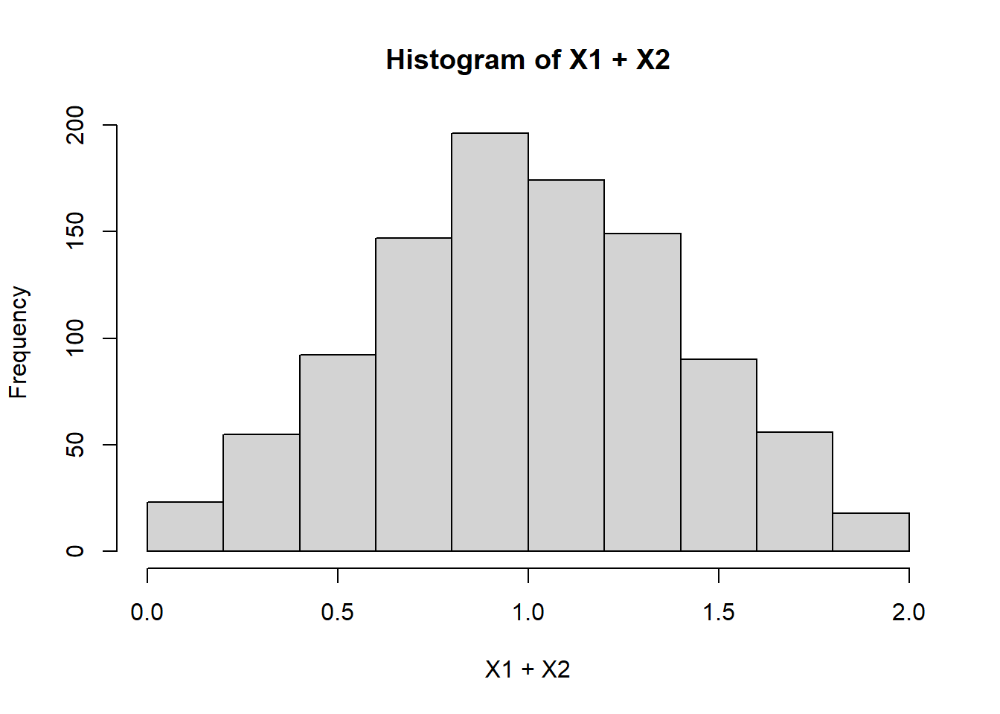

Chapter 4 Known Distributions
This will cover proofs and useful properties of commonly used distributions, as well as location-scale and exponential families.
4.1 Families of Distributions
Many so-called “distributions” are actually families of distributions, meaning that their pdf involves one or more parameters. That is, their pdfs represent a family of curves, a set of pdfs with variable parameters.
For example, the \(\text{Normal}(\mu, \sigma^2)\) distribution contains two parameters, \(\mu\) (the mean), and \(\sigma^2\) (the variance). These are also examples of two types of parameters with special properties - called location and scale parameters, respectively - that can be used to simply calculations.
4.2 Location and Scale Families
4.2.1 Location Families
Definition 4.1 (Location Family) Let \(Z \sim f_Z(z)\). Given a constant location parameter \(b\), \(X\) is a location family if \(X \sim f_Z(z - b)\) or if \(X = Z + b\).
The two above definitions are equivalent because if \(X = Z + b\), then \(P(X < z) = P(Z + b < z) = P(Z < z - b)\), so the cdf of \(Z\) is \(F_Z(z - b)\) and therefore \(X \sim f_Z(z - b)\) (note this makes use of a direct probability argument)
4.2.2 Scale Families
Definition 4.2 (Scale Family) Let \(Z \sim f_Z(Z)\). Given a constant scale parameter \(a\), \(X\) is a scale family if…
- \(X \sim \frac{1}{a}f_Z(\frac{z}{a})\)
- \(X \sim F_Z(\frac{z}{a})\)
- or \(X = aZ\)
All of the above definitions are equivalent because if \(X = aZ\), then \(P(X < z)\) = \(P(aZ < z) = P(Z < \frac{z}{a} = F_Z(z)\). Also, \(f_X(x) = \frac{d}{dx}F_X(x) = \frac{d}{dx}F_Z(\frac{z}{a}) = \frac{1}{a}f_Z(\frac{z}{a})\)
4.2.3 Properties of Location-Scale Families
We can compute moments by using general properties of expectation (see Moments)
\(E(X) = aE(Z) + b\), by linearity of expectation. If the support of \(Z\) includes \(0\), then we typically define \(Z\) such that \(E(Z) = 0\) so that \(E(X) = b\).
\(Var(X) = a^2Var(Z)\), since \(Var(Z + b) = Var(Z)\). We typically define \(Z\) such that \(Var(Z) = 1\), so that \(Var(X) = a^2Var(Z) = a^2\). An example of this is the standard normal.
\(\mathcal{M}_X(t) = e^{tb} \mathcal{M}_Z(at)\)
It may seem like the sum of a scale family should also follow the same family - indeed, this is true for a number of distributions include the Normal, Poisson, and Gamma. However, it is not true always. For instance, \(X_i \sim \text{Uniform}(0,a)\) is a scale family, but \(X_1 + X_2\) does not follow a uniform distribution:

4.3 Exponential Families
Definition 4.3 (Exponential Family) \(X \sim f_X(x|\theta)\) is an exponential family if its pdf can be written in the form
\[f_X(x|\theta) = h(x)c(\theta)\exp\Big(\sum_{i=1}^k w_i(\theta)t_i(x)\Big)\]
How do we prove that a pdf can be written in the above form? Often, the easiest way is to use a simple trick to get the necessary \(\exp\) function: \(f(x) = \exp(\log(f(x)))\). Then, we algebraically manipulate to obtain this form. Here’s an example for a distribution which will be presented imminently.
Example 4.1 (Simple Technique: Proving Exponential Families) From Casella and Berger (1990), \(X \sim \text{Binomial}(n, p)\) is an exponential family given fixed \(n\) and \(p \in (0,1)\). Proof: By the properties of the logarithm,
\[ f_X(x|p) = {n\choose x}p^x(1-p)^{n-x} = {n\choose x}\exp(x\log(p) + (n-x)\log(1-p))\\ = {n\choose x}\cdot\exp(n\log(1-p))\cdot\exp(x\log(\frac{p}{1-p})) \] Letting \(h(x) = {n\choose x}\), \(c(\theta) = \exp(n\log(1-p))\), \(w(\theta) = \log(\frac{p}{1-p})\) and \(t(x) = x\), the Binomial is an exponential family. We require \(p \in (0,1)\) to guarantee \(w(\theta)\) is not undefined.
How do we prove that a pdf cannot be written in the above form? Generally, we want to prove that the pdf cannot be factorized into separate functions of \(x\) and \(\theta\).
One example of this is when the support depends on the parameter. Consider \(f_X(x|\theta) = \frac{1}{\theta}\cdot I(x < \theta)\), the pdf of a \(\text{Uniform}(0, \theta)\). Here the indicator function \(I(x < \theta)\) cannot be decomposed in any way. Since it is mathematically impossible to factorize \(I(x < \theta)\) into \(x\) and \(\theta\), we know that any function containing an indicator involving \(X\) and \(\theta\) cannot be an exponential family.
Also note that, by this definition of the exponential family, in order to guarantee that \(f_x(x|\theta)\) integrates to 1, it must be true that
\[\frac{1}{c(\theta)} = \int_{-\infty}^{\infty}h(x)\exp\Big(\sum_{i=1}^k w_i(\theta)t_i(x)\Big)\] a fact which can be used to prove certain properties of exponential families. For example,
FORTHCOMING
4.3.1 Properties
Exponential families have a number of incredibly useful properties:
- Leibniz’s rule holds, meaning that the Cramer-Rao Lower Bound provides a lower bound on the variance of estimators.
- Among most common families, only exponential families admit sufficient statistics with dimension bounded in \(n\). This is proven by the Pitman-Koopman-Darmois theorem for families with smooth, nowhere-vanishing pdfs whose domain does not depend on the parameter being estimated.
- If \(X\) is an exponential family, \[T(X) = \Big(\sum_{i=1}^n t_1(x), ..., \sum_{i=1}^n t_k(x)\Big)\] is a minimal sufficient statistic.
- Furthermore, if \(\{w_1(\theta),...,w_k(\theta)\}\) contains an open set, then \(T(X)\) is a complete sufficient statistic, which we can use to compute an UMVUE.
- The Method of Moments (MOM) estimator is equal to the Maximum Likelihood Estimator (MLE)
- The regularity conditions required for consistency and asymptotic normality of the MLE are guaranteed to hold.
- The family must have a Monotone Likelihood Ratio, meaning that the Karlin-Rubin Theorem may be employed to construct an UMP test.
4.3.2 Natural Exponential Families
Definition 4.4 (Natural Exponential Family) \(X \sim f_X(x|\theta)\) is a natural exponential family if its pdf can be written in the form
\[f_X(x|\theta) = h(x)c^*(\boldsymbol{\eta})\exp\Big(\sum_{i=1}^k \eta_i t_i(x)\Big)\]
This is also sometimes called the “canonical parametrization.”
4.4 Known Univariate Exponential Families
Many common distributions follow exponential families. As you will come to find, virtually all of them arise in order to model variations on a common idea: the Bernoulli trial. Let’s discuss this distribution, and the situations in which it arises.
4.4.1 Bernoulli
The Bernoulli distribution, represented mathematically as \(\text{Bernoulli}(p)\), describes the outcome of a random variable \(X\) that takes only two possible values, 0 and 1. Such an event is often termed a “Bernoulli trial”.
| Description | Parameters | Support | pmf |
|---|---|---|---|
| Any random variables whose value can be either 0 or 1 | \(0 \leq p \leq 1\) | \(x \in \{0, 1\}\) | \(p^x(1-p)^{1-x}\) |
The Bernoulli distribution occurs very commonly because many situations can be described in terms of 0 or 1 outcomes. For example, all indicator functions \(I(A)\) of random variables, where \(A\) is a statement about the random variable (for instance, \(A = \{x: x > 1\}\)) are Bernoulli random variables with \(p = P(A)\).
- The Bernoulli is a special case of the Binomial distribution: \(\text{Bernoulli}(p) = \text{Binomial}(1, p)\)
- As we discuss regarding the Binomial distribution, the Bernoulli has an additive property: \(\sum_{i=1}^n \sim \text{Binomial}(n, p)\). This can be proven by the additivity technique discussed imminently.
- If \(X\sim \text{Bernoulli}\) then \(E(X) = P(Y = 1)\), a fact which is often useful for computing moments as well as finding UMVUEs.
- The above also holds true for multiple Bernoulli random variables. For example, if \(Z_1, Z_2 \sim \text{Bernoulli}\), then \(E(Z_1Z_2) = P(Z_1 = 1, Z_2 = 1)\).
4.4.2 Binomial
What happens when we repeat a Bernoulli trial many times and count how many 1’s occur? The Binomial distribution is represented mathematically as \(\text{Bernoulli}(n, p)\). It describes the number of successes in a series of Bernoulli trials.
| Description | Parameters | Support | pmf |
|---|---|---|---|
| The number of times an event was successful out of \(n\) attempts | \(0 \leq p \leq 1\), \(n \in \mathbb{N}\) | \(x \in \mathbb{N}\) | \({n\choose x}p^x(1-p)^{n-x}\) |
Example 4.2 (Proving Additive Properties of Distributions) The Binomial distribution is additive: if \(X \sim \text{Binomial}(n,p)\) and \(X \sim \text{Binomial}(m,p)\), then \(X + Y \sim \text{Binomial}(m + n, p)\). One can prove the additivity of any distribution, not just the Binomial, by relying on the convolution property of mgfs: \(\mathcal{M}_{X + Y}(t) = \mathcal{M}_X(t)\cdot\mathcal{M}_Y(t)\).
Here’s an example with the Binomial: if \(X \sim \text{Binomial}(n, p)\) and \(Y \sim \text{Binomial}(m, p)\), then
\[\mathcal{M}_{X + Y}(t) = ((1-p) + pe^t)^n\cdot ((1-p) + pe^t)^m = ((1-p) + pe^t)^{mn}\] which we can recognize as the mgf of a \(\text{Binomial}(n + m, p)\) distribution. Since, like the cdf and the pdf, the mgf fully characterizes a probability distribution, we’ve proven the additive property mentioned above.
Here’s another example with the Binomial, this time generalizing it to an arbitrary summation: If \(X_i \overset{iid}{\sim} \text{Binomial}(m, p)\), and \(Y = \sum_{i=1}^nX_i\), then
\[ \mathcal{M}_Y(t) = \prod_{i=1}^n\mathcal{M}_{X_i}(t) = (\mathcal{M}_{X_i}(t))^n \\ = (((1-p) + pe^t)^m)^n = ((1-p) + pe^t)^{mn} \]
proving the generalized additive property that if \(X_i \sim \text{Binomial}(m, p)\), then \(\sum_{i=1}^n X_i \sim \text{Binomial}(nm, p)\).
4.4.3 Geometric
Suppose instead of counting the number of successes, we wish to count the number of attempts until a single success occurs? The Geometric distribution is represented mathematically as \(\text{Geo}(p)\). It describes the number of trials before a success occurs in a series of Bernoulli trials.
Note that the parametrization below does not include the final success in the number of trials, but alternatives exist in which it may.
| Description | Parameters | Support | pmf |
|---|---|---|---|
| The number of Bernoulli trials attempted before a success occurs | \(0 < p \leq 1\) | \(x \in \mathbb{N}\) | \(p(1-p)^{x}\) |
- The Geometric is a special case of the Negative Binomial: \(\text{Geo}(p) = \text{NegBin}(1, p)\)
- Just like the Bernoulli, the Geometric has an additive property: \(\sum_{i=1}^n X_i \sim \text{NegBin}(n, p)\), proven via the same addivity technique discussed previously.
- The Geometric is the only discrete memoryless distribution; that is, for \(k > i\), \(P(X \geq k | X > i) = P(X \geq k - i)\).
4.4.4 Negative Binomial
The Negative Binomial distribution generalizes the Geometric distribution to instead represent the number of Bernoulli trials until \(r\) successes have occurred. It is represented mathematically as \(\text{NegBin}(r, p)\).
| Description | Parameters | Support | pmf |
|---|---|---|---|
| The number of Bernoulli trials attempted before a success occurs | \(0 < p \leq 1\), \(r \in \mathbb{N}\) | \(x \in \mathbb{N}\) | \({x+r-1\choose x}p^r(1-p)^{x}\) |
- The Negative Binomial is additive: If \(X_i \sim \text{NegBin(r, p)}\), then \(\sum_{i=1}^n X_i \sim \text{NegBin(nr, p)}\)
4.4.5 Poisson
The Poisson distribution describes one possible behavior of a count random variable. It describes the probability that a certain number of events occur within a fixed interval, such as a time period, distance or area. It is mathematically represented as \(\text{Poisson}(\lambda)\).
| Description | Parameters | Support | pmf |
|---|---|---|---|
| The number of events occurring in a fixed interval | \(\lambda \in (0, \infty)\) | \(x \in \mathbb{N}_0\) | \(\frac{1}{x!}\lambda^xe^{-\lambda}\) |
- Like the Binomial, the Poisson is formulated by counting the number of successes within a set of Bernoulli trials. The distribution describes the asymptotic behavior of the Binomial distribution as \(n \rightarrow \infty\) and \(np \rightarrow \lambda\), a fixed rate parameter.
- The Poisson is additive. If \(X_i \sim \text{Poisson}(\lambda)\), then \(\sum_{i=1}^n X_i \sim \text{Poisson}(n\lambda)\)
4.4.6 Normal
Often denoted \(N(\mu, \sigma^2)\), the Normal distribution is especially common in asymptotics - by the Central Limit Theorem, the sample mean converges in distribution to a normal. Many other variables also converge to a normal.
For \(X \sim N(\mu, \sigma^2)\), the mean is \(\mu\) and the variance is \(\sigma^2\). This means that the Normal is a location-scale family.
| Description | Parameters | Support | |
|---|---|---|---|
| Describes the asymptotic behavior of sample means and many distributions | \(\mu \in \mathbb{R}\), \(\sigma^2 \in (0, \infty)\) | \(x \in \mathbb{R}\) | \(\frac{1}{\sqrt{2\pi\sigma^2}}\exp\Big(-\frac{1}{2}\frac{(x-\mu)^2}{\sigma^2}\Big)\) |
- The following distributions converge to a Normal:
- \(\text{Binomial}(n, p) \approx N(np, np(1-p))\) for large \(n\) and \(p\) bounded away from 0 or 1
- \(\text{Pois(\lambda)} \approx N(\lambda, \lambda)\) for large \(\lambda\).
- \(\chi^2(\nu)\approx N(\nu, 2\nu)\) for large \(\nu\).
- \(t(\nu) \approx N(0, 1)\) for large \(\nu\).
- The Normal is additive. If \(X_1 \sim N(\mu_1, \sigma_1^2)\) and \(X_2 \sim N(\mu_2, \sigma_2^2)\), and \(X_1, X_2\) are iid, then \(X + Y \sim N(\mu_1 + \mu_2, \sigma_1^2 + \sigma_2^2)\).
- If \(X_1\) and \(X_2\) are normally distributed as above, but also correlated with \(Corr(X_1, X_2) = \rho\), then \(X + Y \sim N(\mu_1 + \mu_2, \sigma_1^2 + \sigma_2^2 + 2\rho\sigma_x\sigma_y)\)
4.4.7 Exponential
The Poisson process that models the number of events occuring in an interval also gives rise to another distribution: the Exponential. This distribution models the size of the interval (time, distance, etc.) between events.
The Exponential is described mathematically as \(\text{Exp}(\lambda)\). It can be parametrized in two ways: with \(\lambda\) as a rate parameter, describing how often events occur; or with \(\lambda\) as a scale parameter (yes, the same scale parameter discussed in Location Scale Families) that is the inverse of the rate. Hence, the Exponential is a scale family.
Note that the parametrization below describes the distribution in terms of the scale parameter. The scale parameter version simply replaces \(\lambda\) with \(\frac{1}{\lambda}\).
| Description | Parameters | Support | |
|---|---|---|---|
| Models the size of the interval between events in a Poisson process | \(\lambda \in (0, \infty)\) | \(x \in (0, \infty)\) | \(\lambda e^{-\lambda x}\) |
- The Exponential is a special case of the Gamma distribution: \(\text{Exp}(\lambda) = \text{Gamma}(1, \lambda)\)
- By extension, the exponential has an additive property: If $X_iExp() $, then \(\sum_{i=1}^n X_i \sim \text{Gamma}(n, \lambda)\).
- The Exponential is the only continuous memoryless distribution; that is, for \(k > i\), \(P(X \geq k | X > i) = P(X \geq k - i)\).
We can prove the memorylessness of the Exponential using conditional probability:
\[ P(X > s | X > t) = \frac{P(X > s, X > t)}{P(X > t)} = \frac{P(X > s)}{P(X > t)} \] since \(s > t\). This equals \(\frac{e^{-\lambda s + 1}}{e^{-\lambda t + 1}} = e^{\lambda(s - t)} = P(X > s - t)\)
4.4.8 Gamma
Similar to how the Negative Binomial generalizes the Geometric to multiple successes, the Gamma generalizes the Exponential to multiple events. The Gamma is useful for modeling random variables that are known to be greater than 0.
It is represented mathematically as \(\text{Gamma}(k, \lambda)\), where \(k\) is a shape parameter and \(\lambda\) is a scale parameter. This means the Gamam is a scale family. It is called “Gamma” because it involves the gamma function.
| Description | Parameters | Support | |
|---|---|---|---|
| Generalization of the exponential distribution | \(k \in (0, \infty)\), \(\lambda \in (0, \infty)\) | \(x \in (0, \infty)\) | \(\frac{1}{\Gamma(k)\lambda^k}x^{k-1}\exp(-\frac{x}{\theta})\) |
- The Gamma is additive: If $X_i(k, ) $, then \(\sum_{i=1}^n X_i \sim \text{Gamma}(nk, \lambda)\).
4.4.9 Beta
The Beta distribution models proportions. It is mathematically denoted \(\text{Beta}(\alpha, \beta)\) where \(\alpha\) and \(\beta\) are two shape parameters. It is known as “Beta” because its pdf contains the beta function: \(B(\alpha, \beta) = \frac{\Gamma(\alpha)\Gamma(\beta)}{\Gamma(\alpha + \beta)}\)
| Description | Parameters | Support | |
|---|---|---|---|
| Model of a proportion | \(\lambda \in (0, \infty)\) | \(x \in (0, 1)\) | \(\frac{\Gamma(\alpha + \beta)}{\Gamma(\alpha)\Gamma(\beta)}x^{\alpha-1}(1-x)^{\beta-1}\) |
4.4.10 Chi-squared
The Chi-squared distribution describes the distribution of the sum of squared standard Normal (\(N(0,1)\)) random variables. As a result, it is useful in asymptotics, especially asymptotic hypothesis testing, since if an estimator is asymptotically normal, its square is asymptotically \(\chi^2\).
It is represented mathematically as \(\chi^2(\nu)\) or \(\chi^2_\nu\) where \(\nu\) is the “degrees of freedom” - the number of squared normal random variables in the sum.
| Description | Parameters | Support | |
|---|---|---|---|
| Squared standard normals | \(\nu \in \mathbb{N}\) | \(x \in (0, \infty)\) | \(\frac{1}{\Gamma(\nu/2)2^{\nu / 2}}x^{\nu/2 - 1}\exp(-\nu/2)\) |
- If \(X_i \sim N(0,1)\), then \(\sum_{i=1}^nX_i^2\sim \chi^2(n)\)
- The Chi-squared distribution is a special case of the Gamma. That is, if \(X \sim \chi^2(\nu)\), then \(X \sim \text{Gamma}(\frac{\nu}{2}, \frac{1}{2})\). This can be observed directly from the pdf.
4.4.11 Weibull
The Weibull is a generalization of the exponential distribution. The extra parameter \(k\) describes how the failure rate changes over time. It is an exponential family when \(k\) is fixed.
Like the exponential, \(\lambda\) is a scale parameter, meaning that the Weibull is a scale family.
| Description | Parameters | Support | |
|---|---|---|---|
| Models time-to-event variables | \(\lambda \in (0, \infty)\), \(k \in (0, \infty)\) | \(x \in [0, \infty)\) | \(\frac{k}{\lambda}\Big(\frac{x}{\lambda}\Big)^{k-1}\exp(-(x/\lambda)^k)\) |
- When \(k = 1\), the Weibull is equal to an \(\text{Exponential}(\frac{1}{\lambda})\), which can be observed directly from its pdf.
4.4.12 Pareto
The Pareto distribution, written \(\text{Pareto}(x_m, \alpha)\), models variables involving power-law relationships. \(\alpha \in (0, \infty)\) is a shape parameter, while \(x_m\) is a scale parameter. This means that the Pareto is a scale family. It is an exponential family when \(x_m\) is fixed.
| Description | Parameters | Support | |
|---|---|---|---|
| Power-law models | \(\alpha \in (0, \infty)\), \(x_m \in (0, \infty)\) | \(x \in [0, \infty)\) | \(\frac{\alpha x_m^\alpha}{x^{\alpha+1}}\) |
- The Pareto is related to the Exponential. If \(X\sim \text{Pareto}(x_m, \alpha)\), then \(Y = \log(\frac{X}{x_m}) \sim \text{Exp}(\alpha)\)
4.5 Non-exponential families
The following families are not exponential, but still commonly arise.
4.5.1 Uniform
The Uniform distribution is parametrized by its minimum \(a\) and maximum \(b\). Denoted \(U(a,b)\), it describes a scenario where every possible value of \(x\) has the same probability.
| Description | Parameters | Support | |
|---|---|---|---|
| Every \(x\) has same probability | \(-\infty < a < b < \infty\) | \(x \in [a, b]\) | \(\frac{1}{b-a}\) |
- If \(X \sim \text{Beta}(1,1)\), then \(X \sim U(0,1)\)
- If \(X \sim U(0,1)\), then \(-\lambda \log(X) \sim \text{Exp}(\lambda)\).
- If \(X_i \overset{iid}{\sim} U(0,1)\), then \(X_{(k)} - X_{(j)} \sim \text{Beta}(k - j, n - (k - j) + 1)\)
- By the Probability Integral Transform, inverse cdfs always follow a standard uniform distribution. That is, if \(X = F_X^{-1}(Y)\), then \(Y \sim U(0,1)\). This can be used to generate any random variable with a known cdf.
4.5.2 Cauchy
The Cauchy arises in situations involving ratios of standard normal variables, as well as rotations. It is \(\text{Cauchy}(x_0, \gamma)\), where \(x_0\) is a location parameter and \(\gamma\) is a scale parameter, making it a location-scale family.
| Description | Parameters | Support | |
|---|---|---|---|
| Rotations and ratios of normals | \(x_0 \in \mathbb{R}\), \(\gamma \in (0, \infty)\) | \(x \in \mathbb{R}\) | \(\frac{1}{\pi \gamma\Big(1 + \Big(\frac{x - x_0}{\gamma}\Big)^2\Big)}\) |
- If \(U, V \sim N(0,1)\) independently, then \(U/V \sim Cauchy(0,1)\)
- The Cauchy is often used as a pathological example in statistical problems, since it famously has no mean or variance (\(E(X) = Var(X) = \infty\))
- If \(X\sim t(1)\), then \(X\sim \text{Cauchy}(0,1)\)
4.5.3 t-distribution
The t-distribution describes the distribution of the t-statistic for \(X_1, ... X_n \overset{iid}{\sim}N(\mu, \sigma^2)\)
\[t = \frac{\bar{X} - \mu}{\sqrt{S^2/n}}\]
As a result, it is commonly used in hypothesis testing. Denoted \(t(\nu)\), the parameter \(\nu\) represents the degrees of freedom - the number of \(X_i\) in the sample that are being summed in the computation of \(\bar{X}\) and \(S^2\).
| Description | Parameters | Support | |
|---|---|---|---|
| Distribution of the t-statistic | \(\nu \in \mathbb{N}\) | \(x \in \mathbb{R}\) | \(\frac{\Gamma((\nu + 1) / 2)}{\sqrt{\nu\pi}\Gamma(\nu/2)}\Big(1 + \frac{x^2}{\nu}\Big)^{-(\nu+1)/2}\) |
- As \(\nu \rightarrow \infty\), the t-distribution converges to a \(N(0,1)\).
- If \(X \sim t(1)\) then \(X \sim \text{Cauchy}(0,1)\).
4.5.4 F-distribution
Also useful for [hypothesis testing]](#hypothesis-tests-finite-samples), the F-distribution, denoted \(F(n, m)\), describes the distribution of the F-statistic:
\[X = \frac{S_1 / n}{S_2 / m}\] where \(S_1\) and \(S_2\) are the sums of independent standard normal random variables with degrees of freedom \(n\) and \(m\), respectively - that is, \(S_1 \sim \chi^2(n)\) and \(S_2 \sim \chi^2(m)\).
| Description | Parameters | Support | |
|---|---|---|---|
| Distribution of the \(F\)-statistic | \(n \in \mathbb{N}\), \(m \in \mathbb{N}\) | \(x \in (0, \infty)\) | \(\sqrt{\frac{(nx)^nm^m}{(nx + m)^{n + m}}}\frac{\Gamma(n + m)}{x\Gamma(n)\Gamma(m)}\) |
- If \(X \ F(n, m)\), then \(\frac{1}{X} \sim F(m, n)\)
- If \(X \sim t(n)\), then \(X^2 \sim F(1, n)\)
- If \(X \sim \chi^2(n)\) and \(Y \sim \chi^2(m)\), then \(\frac{X / n}{Y / m} \sim F(n, m)\)
- If \(X_i \overset{iid}{\sim} \text{Gamma}(\alpha_i, \beta_i)\), then \(\frac{\alpha_2\beta1X_1}{\alpha_1\beta_2X_2} \sim F(2\alpha_1, 2\alpha_2)\)
- If \(X \sim \text{Beta}(n/2, m/2)\), then \(\frac{mX}{n(1-X)}\sim F(n, m)\)
4.5.5 Hypergeometric
Imagine drawing \(n\) samples without replacement from a finite population of size \(N\). Suppose \(K\) of the units in the population are considered “successes” if drawn. The Hypergeometric distribution, denoted \(\text{HGeo}(N, K, n)\), describes the probability that you will draw \(x\) “successes” under these circumstances.
| Description | Parameters | Support | pmf |
|---|---|---|---|
| Sampling without replacement | \(N \in \mathbb{N}_0\), \(K \in \{0, 1, ..., N\}\), \(n \in \{0,1,...,N\}\) | \(x \in \{\max(0, n+K-N),..., \min(n,K)\}\) | \(\frac{{K\choose x}{N - K \choose n - x -1}}{N \choose n}\) |
- Fisher’s Exact Test is based on the Hypergeometric distribution.
- If \(X \sim \text{HGeo}(N, K, n)\), and \(N\) and \(K\) are sufficiently large compared to \(n\), then \(X \approx \text{Binom}(n, p)\)
4.6 Multivariate Distributions
4.6.1 Bivariate Normal
The bivariate normal describes a situation where two random variables \(X\) and \(Y\) are normally distributed, and their sum is also normally distributed.
| Description | Parameters | Support | pmf |
|---|---|---|---|
| Two-dimensional normal | \(\mu_x, \mu_y \in \mathbb{R}\), \(\sigma_x, \sigma_y \in \mathbb{R} > 0\), \(\rho \in [-1, 1]\) | \(x\in\mathbb{R}^2\) | \(\frac{1}{2\pi\sigma_x\sigma_y\sqrt{1-\rho^2}}\exp\Big(-\frac{1}{2(1-\rho^2)}\Big((\frac{x-\mu_x}{\sigma_x})^2 - 2\rho(\frac{x - \mu_x}{\sigma_x})(\frac{y - \mu_y}{\sigma_y}) + (\frac{y-\mu_y}{\sigma_y})^2\Big)\Big)\) |
Suppose that \((X, Y)\) follows the bivariate normal distribution above. Then,
- The marginal distributions are \(X \sim N(\mu_x, \sigma_x^2)\) and \(Y \sim N(\mu_y, \sigma_y^2)\)
- \(Corr(X, Y) = \rho\)
- Any linear combination of \(X\) and \(Y\) is univariate normal. That is, \(aX + bY \sim N(a\mu_x + b\mu_y, a^2\sigma_x^2 + b^2\sigma_y^2 +2ab\rho\sigma_x\sigma_y\).
- The conditional distribution \(Y|X = x \sim N\Big(\mu_Y + \frac{\sigma_Y}{\sigma_X}\rho(x - \mu_X), \sigma_Y^2(1-\rho^2)\Big)\)
4.6.2 Multivariate Normal
The Multivariate Normal, often denoted \(MVN(\mu, \Sigma)\), generalizes the normal to a random vector \(X\) where all linear combinations of its components have a univariate normal distribution.
| Description | Parameters | Support | pmf |
|---|---|---|---|
| \(k\)-dimension normal | \(\mu \in \mathbb{R}^k\), \(\Sigma \in \mathbb{R}^{k \times k}\) | \(x\in\mathbb{R}^k\) | \(\frac{1}{\sqrt{(2\pi)^{k}\det(\Sigma)}}\exp\Big(-\frac{1}{2}(x - \mu)^\top\Sigma^{-1}(x-\mu)\Big)\) |
If a vector \(X\sim MVN(\mu, \Sigma)\), then
- All marginal distributions of \(X\) follow a multivariate normal with the marginalized means and rows/columns in the covariance matrix dropped. For example, \(X_1 \sim N(\mu_1, \sigma_1)\)
- If \(Y = c + BX\), then \(Y \sim MVN(c + B\mu, B\Sigma B^\top)\)
Note that two normally distributed random variables may not be jointly bivariate normal!
4.6.3 Multinomial
Consider an event in which one of \(k\) discrete outcomes is guaranteed to occur - for instance, rolling a 6-sided die, where there are \(k = 6\) possible outcomes. Repeat this event \(n\) times. If outcome \(i\) occurs with probability \(p_i\) (not necessarily equal), then the number of times \(X_i\) that each outcome \(i = 1,...,k\) occurs after \(n\) trials is modeled by the Multinomial distribution. \(X\) is a vector representing the number of successes of each event.
| Description | Parameters | Support | pmf |
|---|---|---|---|
| \(k\) joint binomials | \(n \in \mathbb{N}\), \(k \in \mathbb{N}\), \(p_1,...,p_k\in (0,1)\), \(\sum_{i=1}^kp_i = 1\) | \(x_i\in \mathbb{N}\), \(\sum_{i=1}^kx_i = n\) | \(\frac{n!}{\prod_{i=1}^kx_i!}\prod_{i=1}^kp_i^{x_i}\) |
If the vector \(X\) is multinomial, then
- All marginal distributions of \(X\) are multinomial
- All conditional distributions are multinomial
- \(X_i \sim \text{Binomial}(n, p_i)\)
- \(Cov(X_i, X_j) = E((X_i - mp_i)(X_j - mp_j)) = -mp_ip_j, \forall i\neq j\)
4.7 Medians and Other Functionals of a Distribution
In statistics, a functional is a function that maps a distribution (CDF) to a real number. For example, expected value is a type of functional treated in-depth in Chapter 6: Moments. Another type of functional that arises in first-year statistical inference courses is the median, which is defined as follows:
Definition 4.5 (Median) The median \(m\) of a random variable \(X\) is a value satisfying
\[P(X \leq m) = P(X \geq m) = \frac{1}{2}\] Intuitively, it is a value that splits the distribution such that half of the probability mass lies on one side and half lies on the other. For continuous random variables, \(m\) satisfies
\[\int_{-\infty}^m f(x)dx = \int_{m}^\infty f(x)dx = \frac{1}{2}\]
If \(X\) has a symmetric distribution - that is, there exists some \(a\) such that
\[\int_{-\infty}^a f_X(x)dx = \int_{a}^\infty f_X(x)dx\]
and its mean \(E(X)\) exists, then \(a = m = E(X)\). We define \(E(X)\) and techniques for computing it in Chapter 6). Therefore, the median is equal to the mean for the following distributions:
as well as any other symmetric distribution. Here’s how to prove such a fact.
Example 4.3 (Proving a median is a mean) Suppose \(X\) is a symmetric location family with location parameter \(\mu = E(X)\). We can show \(\mu\) must be the median as follows. Since \(X\) is symmetric, we can expand directly from the definition of a pdf, using the property that it must integrate to 1:
\[ \int_{-\infty}^\infty f_X(x)dx = \int_{-\infty}^\mu f_X(x)dx + \int_{\mu}^\infty f_X(x)dx = 1 \\ \iff 2\int_{-\infty}^\mu f_X(x) = 1 \iff \int_{-\infty}^\mu f_X(x) = \frac{1}{2} \] by definition of symmetry, showing that \(\mu\) is a median by definition.
If \(X\) is not symmetric, we can calculate a median using the cumulative distribution function (CDF) of the given distribution. Here are two examples:
Example 4.4 (Calculating a Median: Exponential) This proof comes from Soch et al. (2022). Suppose we want to find the median \(m\) of a \(X\sim \text{Exp}(\lambda)\) distribution. By the definition of a median,
\(F_X(m) = \frac{1}{2}\)
Since the CDF of an exponential distribution is
\[\int_0^x\lambda\exp(-\lambda t)dt = 1 - \exp(-\lambda x)\]
So, \(1 - \exp(-\lambda m) = \frac{1}{2} \implies \log(\frac{1}{2}) = -\lambda m \implies m = \frac{\log(2)}{\lambda}\)
Hence, we’ve calculated the median of the exponential distribution.
Example 4.5 (Calculating a Median: Cauchy) Suppose \(X \sim \text{Cauchy}(x_0, \gamma)\). Again, we use the CDF:
\[ F_X(x) = \frac{1}{\pi}\arctan\Big(\frac{m-x_0}{\gamma}\Big) + \frac{1}{2} = \frac{1}{2}\\ \iff \frac{m- x_0}{\gamma} = \tan(0)\\ \iff m = x_0 \] proving the median of the Cauchy is its scale parameter.
Often, we may be interested in estimating a median as well. Techniques for this are discussed in Chapters 8 and 9.
What about other functionals? Quantiles are functionals that define points on a distribution such that a certain probability mass lies among those values less than the quantile. An example is the 75th percentile - values less than this percentile make up 75 percent of the probability mass. We also just discussed the median, which is the 50th percentile.
Mathematically, we can write a quantile \(q_p\) as
\[F(q_p) = p\] So for example, the 75th percentile would be a value \(q\) satisfying $F(q) = 0.75. We can solve for quantiles the same way we did the median - here’s an example:
Example 4.6 (Percentiles of the Cauchy) For \(X\sim \text{Cauchy}(0, \gamma)\), the parameter \(\gamma\) characterizes the 25th and 75th percentiles. Let’s prove it using the same technique as the median - using the CDF of the Cauchy.
\[ F(q) = \frac{1}{\pi}\arctan\Big(\frac{q}{\gamma}\Big) + \frac{1}{2} = \frac{3}{4} \\ \iff \frac{q}{\gamma} = \tan(\frac{\pi}{4}) = 1\\ \iff q = \gamma \] The same process can be repeated for the 25th percentile, since \(\tan(\frac{3\pi}{4}) = -1\), so the 25th percentile is \(-\gamma\).